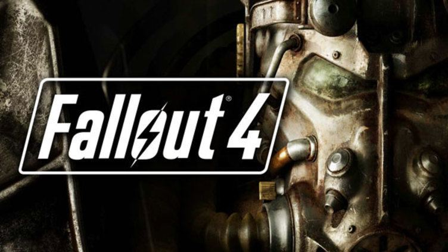

폴아웃 4는 베데스다 게임 스튜디오가 개발하고 베데스다 소프트웍스에서 2015년 11월 10일 출시한 오픈월드 아포칼립스 RPG 게임으로 폴아웃 시리즈의 최신작이다
한국에서는 H2인터렉티브가 15년 11월 20일에 정식 발매 하였다. 2017년 6월 13일 E3 베데스다 쇼케이스에서 VR 버젼 출시가 발표되었다. 폴아웃 3으로부터 10년 후, 폴아웃: 뉴 베가스로부터 6년이 지난 서기 2287년의 커먼웰스, 즉 미국 동북부의 보스턴을 비롯한 메사추세츠 주 일대를 무대로 하고 있다